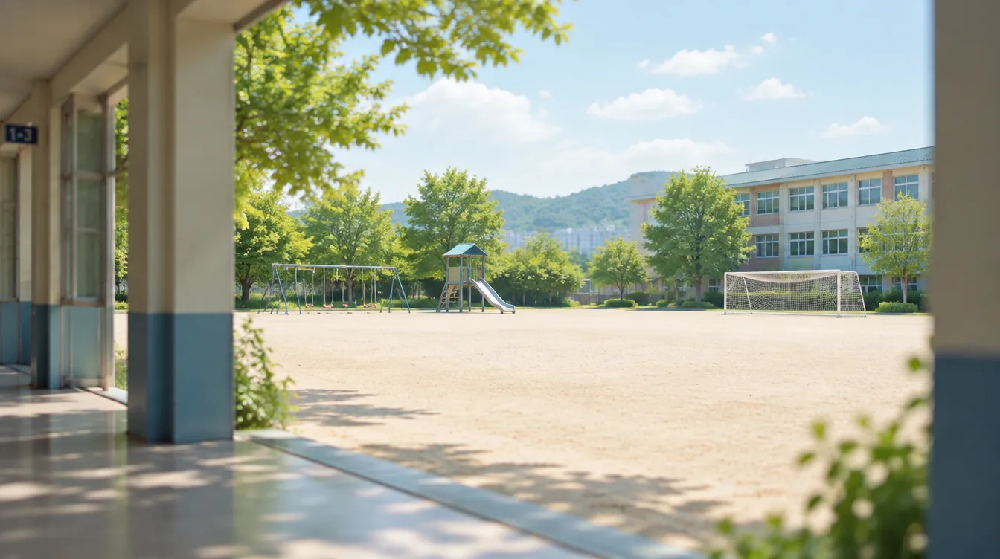
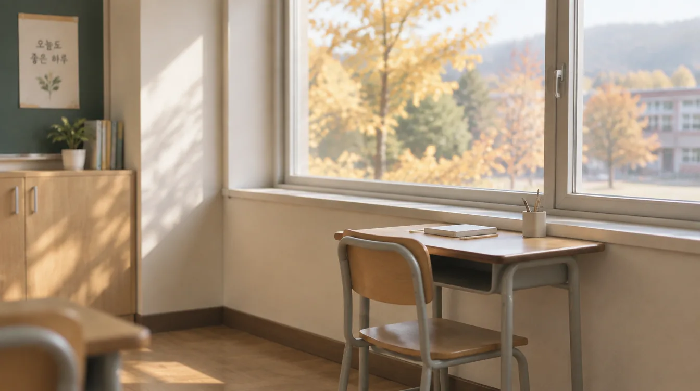
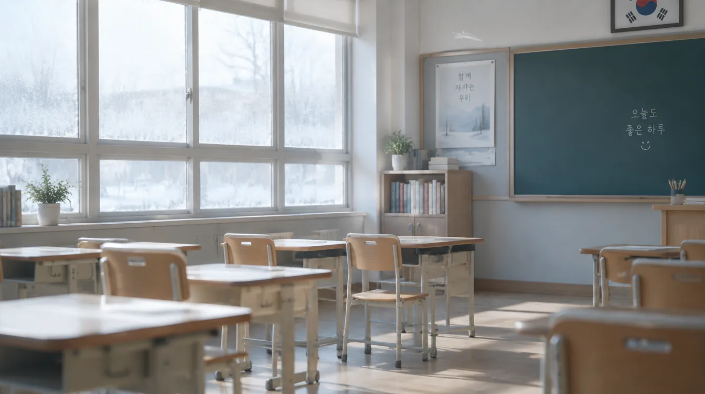
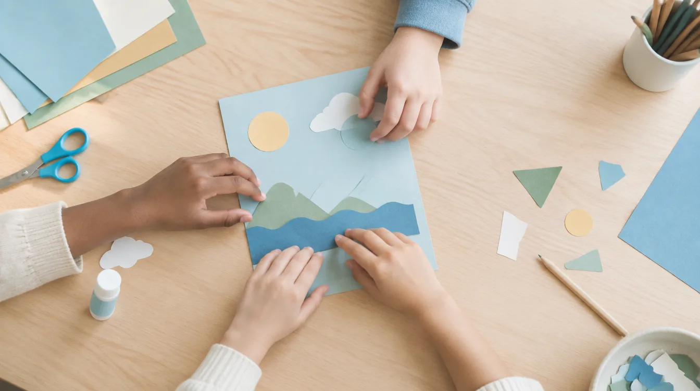

막막한 건 당연합니다
그런데
혼자 하는 일이 아닙니다
가장 잘 아는 사람이
옆 교실에 있습니다
우리 반 아이가 무엇을 할 수 있고 어디에서 막히는지, 작년에 무엇이 도움이 되었는지. 그 정보를 이미 가진 사람이 같은 건물에 있습니다.
혼자 다 하는 게 아닙니다
특수학급에서 일부 시간을 보내더라도 원소속은 통합학급입니다. 다만 담임이 맡는 일과 함께 정하는 일이 나뉘어 있습니다.
담임이 합니다
함께 정합니다
가장 먼저
옆 교실로 갑니다
혼자 알아내려 하지 않아도 됩니다. 3월에 할 일 중 첫 번째는 특수교사를 찾아가는 것입니다.
이렇게 물어보세요
무엇을 물어야 할지 모르겠다면, 이 여섯 가지로 시작하면 됩니다.
그다음에 할 일
학습자·상황 분석 조사지
양구초등학교에서는 학기 초에 담임이 작성하는 학습자·상황 분석 조사지를 함께 씁니다. 교실에서 관찰한 대로 적어 두면 개별화교육계획과 평가 방법을 정할 때 그대로 쓰입니다. 양식 보러 가기
언제 무엇이
기다리고 있는지
3월 — 시작
특수교사와 첫 협의 · 교실 환경 점검 · 적응기간 운영 · 1학기 IEP 수립과 승인
4~7월 — 학기 중
장애공감 교육 · 수업과 평가 참여 방안 협의 · 학교 행사 참여 지원 협의 · 학부모 상담
8~9월 — 학기말과 2학기
1학기 평가 결과 입력 · 평가서 배부 · 2학기 IEP 수립
12~2월 — 마무리
2학기 평가 결과 입력 · 한 해 기록 정리 · 다음 학년 인계



같은 활동,
다른 참여
다른 수업을 따로 준비하는 것이 아닙니다. 같은 활동에 참여하는 방법을 하나 더 열어 두는 것입니다. 그 방법은 특수교사와 함께 정합니다.
수업에서
글로 쓰기 어려우면 말로 하거나 그림으로 표현하게 하고, 문제 수가 많으면 핵심 문항만 고르게 합니다. 모둠 안에서 맡을 역할을 하나 만들어 주는 것도 방법입니다.
평가에서
평가조정은 배려가 아니라 권리입니다.
「장애인차별금지 및 권리구제 등에 관한 법률」 제14조는 교육기관의 정당한 편의 제공을 의무로 정하고 있습니다.
조정만으로 참여가 어려우면 대안평가를 검토합니다. 평가 결과를 나이스에 입력하고 평가서를 배부하는 일은 담임의 몫입니다.
함께 지내는 교실
특별한 프로그램이 아니라 매일의 학급 운영 안에서 만들어집니다. 그리고 그 일도 혼자 하지 않습니다.

우리 반 만들기
반 아이들에게 어떻게 소개할까
3월에 가장 많이 막히는 지점입니다. 정답은 없지만 순서는 있습니다.
받을 수 있는 도움
대부분 교육지원청 특수교육지원센터에 공문으로 신청합니다. 절차는 특수교사나 업무담당자에게 물어보면 됩니다.
어디에 물어야 할지 모를 때는 소속 교육지원청 특수교육지원센터부터 찾으면 됩니다.
도 단위 기관
지역 특수교육지원센터
장애영역별 지원센터
그래서
혼자 하지 않습니다
처음 맡은 3월에 알아야 할 것은 여기까지입니다.
그다음은 옆 교실 선생님과 함께 정하면 됩니다.
첫걸음은 옆 교실에서